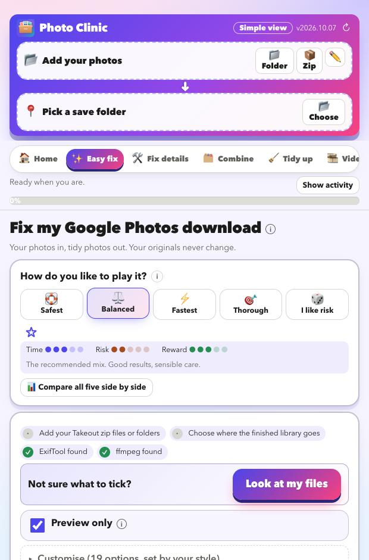
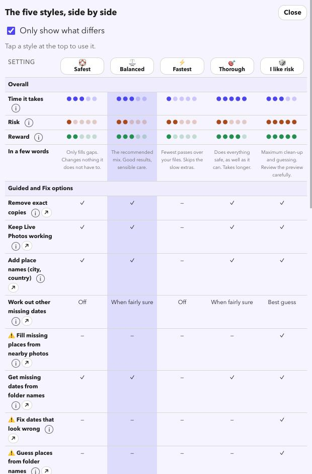

Clean up your Google Takeout
Give every photo its story back
Google keeps the dates, places and captions in separate files and leaves the photos themselves bare. Photo Clinic reads those files and writes everything back.
Download for Mac
What goes wrong in a Takeout
- Every photo shows the day you downloaded it, not the day you took it.
- Locations and captions are missing from the pictures.
- Live Photos arrive split into a picture and a separate video.
- Google's
-editedcopies sit next to the originals. - Albums become folders full of duplicate copies.
- Hundreds of
.jsonfiles clutter the folders, and names get cut off or numbered(1).
What Photo Clinic puts right
Dates, places, captions
Restored from Google's own files: dates, locations, captions, people and favourites, across many zips and batches.
Time zones done properly
Google stores times in UTC. Photo Clinic writes local time with the right offset, using the photo's location or this Mac's time zone.
Live Photos back together
The picture and its video are paired again so Apple Photos treats them as one.
Edited copies matched
Choose to keep both, keep the edit or keep the original.
Albums kept
One copy of each photo is kept, and the albums are written out as keywords and a list so nothing is lost.
Motion Photos
The video hidden inside a Google Motion Photo is pulled out and saved as a normal MP4.
Dates and places, even when Google has none
- Missing dates rebuilt from the file name (
IMG_20190704_…,PXL_…, screenshots), neighbouring photo numbers, the folder name and the file's own time. Each guess has a confidence you can review. - Places filled in from nearby photos or a GPX track, or guessed from a folder name like
Johannesburg. Guesses are labelled as guesses and never replace a real location. - Place names written in (city, region, country) from an offline list of about 144,000 towns and cities. No internet needed.
- Wrong dates flagged, such as future dates or a year that disagrees with the folder.
Choose how careful to be
Five styles set every option for you. Balanced is the recommended mix.
- Every style starts as a preview. Nothing changes until you untick it and press start.
- Compare all five in one table, and save your own settings as a favourite with the star.

See it before it happens
- A pre-flight check tells you what is in your Takeout before anything runs.
- A before-and-after storyboard shows a few of your real photos with what changes in the date, place and caption.
- Your originals are copied, not touched.
Look at your library for free
Download it, point it at your photos, and read the preview. That costs nothing and changes nothing.
Download for MacFree · Apple silicon Macs · signed and checked by Apple